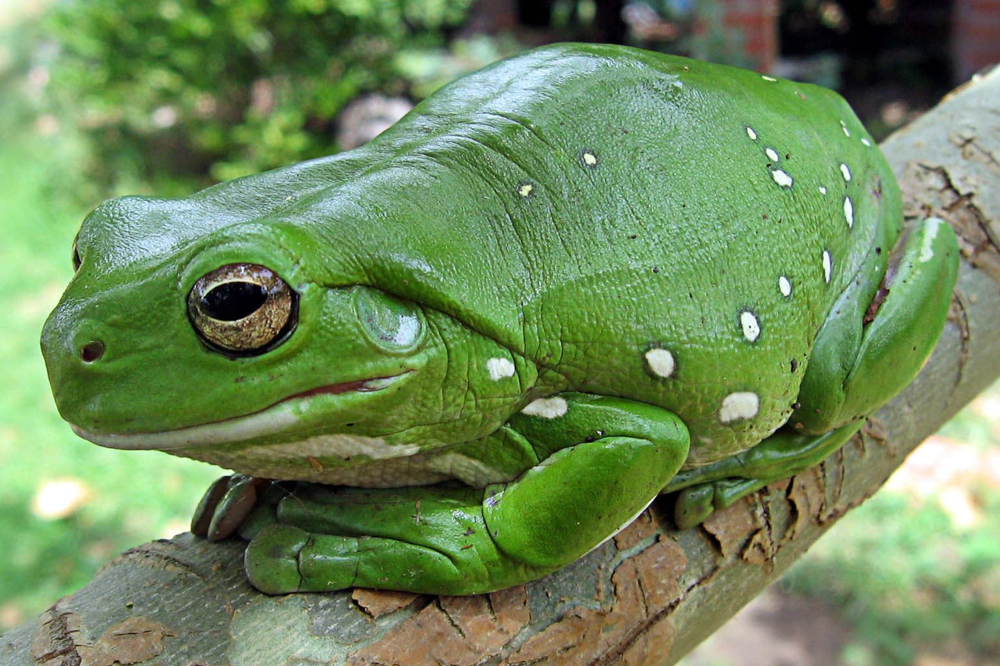

White's Tree Frog Oedema: Reading Fluid Retention Before the Lymph Hearts Fail
A frog that looks pleasingly plump is often a frog that is not moving fluid. The difference between a good body condition score and oedema is where the swelling sits.

At 22-27 °C (72-80 °F) the lymph hearts of a White's Tree Frog beat somewhere between forty and sixty times a minute, and that is the whole engine behind a system with no other pump. Ranoidea caerulea has no pressurised circulation pushing interstitial fluid back uphill — it has a pair of contractile sacs near the tail base working against roughly the pressure your calf muscle generates standing still. Let those stall, and fluid pools where gravity puts it. The bag under the chin comes first. The thighs go next.
The night I found the second chin
February, half past eleven, torch in my teeth, doing a last water top-up. The frog — a nine-year-old female I raised from a thumb-sized juvenile — sat on her cork round in the usual posture, front feet turned in, and I nearly walked past her. Then she turned her head and a loose fold swung under her jaw like a wattle. I weighed her: 61 g, against 58 g a fortnight earlier on the kitchen scale. The skin over her thighs tented for a full second when I let go.
I had been topping her bowl up from the tap every second day and had never tested the nitrate. Our tap reads 40 mg/L out of the cold. I still cannot tell you that was the cause. What I can tell you is that rainwater, a 70 °F bowl and 25 % changes every other day put her back to 57 g in eleven days. The vet bill for the fluid exam and skin scrape was £190.
What the lymph hearts do, and why they stall
Amphibian skin is a permeable membrane over a blood supply, with no keratin layer to slow water down. Fluid leaks from capillaries into tissue spaces and the lymphatic system collects it; in frogs that system is driven by lymph hearts — muscular, valved chambers that contract rhythmically and push lymph back into the veins. They are pumps, not valves you can wait on. Three things knock them down.
Cold. Lymph heart rate scales with temperature. Below about 18 °C (65 °F) the frog becomes a very slow animal and lymph return falls behind capillary leakage. That corrects itself when the frog warms — unless the keeper has the bowl at 72 °F and the floor at 66 °F, so there is no warm place to drive the pump from.
Fluid overload. A frog sitting in deep, freshly treated water absorbs more than its kidneys can excrete. Frog kidneys dilute urine well but are not built for constant influx, and when input beats output the fluid ends up back where it started.
Water chemistry. Ammonia and nitrite at any readable level damage skin and add chronic inflammation. Nitrate is the one keepers argue about: amphibian-medicine consensus I trust treats 40-50 mg/L as a ceiling, not a target, and many clinical sources go lower. I run below 20 mg/L — a preference, not a published threshold, and I'll say so.
None of this rules out infection (often Aeromonas or Pseudomonas in dirty water), renal disease or heart failure. All three look identical from outside the glass. That is the honest limit of home diagnosis.
The measurement routine that earns a diagnosis
- Weigh weekly, same time, same scale, in grams. A 0.1 g scale costs less than a bag of crickets. Write the number and the date down, because memory is a liar.
- Flag a 5 % fortnightly rise. In a 60 g frog that is 3 g — plain on a scale, invisible in a photo.
- Test the water quarterly, at source. Ammonia, nitrite, nitrate, pH and hardness. Above roughly 12 °dGH the hardness is a load the frog cannot excrete, and that is the classic cause of what keepers call bloat but which is really osmotic.
- Probe both ends, not the front glass. A dial on the door reads the room, not the frog.
Enclosure, water and substrate: the system, not the box
The lymph hearts need a warm side to work from. I keep the warm end at 26-28 °C (79-82 °F), a night drop to 22 °C, the cool end at 22-24 °C, and humidity at 60-75 % with a short drying period each day. This is a subtropical frog from far northern Queensland and southern New Guinea, and a permanent 90 % does more harm than good: constantly wet skin compromises the barrier, and a wet frog on a cold floor is a sitting duck for both infection and fluid retention.
Juveniles under 40 mm snout-to-vent are the fragile stage — higher surface area to mass means they over-hydrate far faster. Shallow water, 5 mm at most, and a draining substrate. Adults in a 45 × 45 × 60 cm enclosure can have a bowl deep enough to soak in, but only if it is emptied and refilled every 48 hours.
Substrate matters more than most keepers admit. An inch of LECA clay pebbles under a screen, with 5-8 cm of damp coir above, lets water pass through instead of sitting against the frog. A springtail clean-up crew keeps the soil active and cuts the ammonia the substrate would otherwise release. And check your supplier's water-quality report: if the tap is chloraminated, a standard dechlorinator splits the molecule and leaves the ammonia — use a chloramine binder, or rainwater remineralised to 4-6 °dGH.
Symptom against cause
The same outward sign has four plausible origins and the right response is not the same for any two.
| What you see | Most likely cause | What to check | What to do |
|---|---|---|---|
| Soft chin swelling, frog active and feeding | Mild retention from cold or hard water | Warm-end probe; GH/KH and nitrate | Warm end to 26-28 °C; softer water; recheck in 7 days |
| Thighs and belly swollen, lethargic, skin taut | Moderate oedema, kidney involvement | 14-day weight trend; feeding history | Vet referral; never "drain" a frog yourself |
| Whole body bloated, red or black patches | Bacterial infection / septicaemia | Temperature and water history; new arrivals | Emergency vet; isolate from other animals |
| Asymmetrical swelling or visible mass | Organ enlargement, impaction, reproductive tissue | Whether it is symmetrical; recent hard-shelled prey | Vet with imaging; do not assume water |
| Swelling after a shed, skin around the vent | Retained shed blocking drainage | Shed history; last week's humidity | Shallow lukewarm soak, gentle removal, monitor |
Every row shares one thing: a swelling frog needs a veterinary opinion faster than a frog that is merely off its food. Not every practice sees amphibians, but the ones that do can sample the fluid and tell you transudate from exudate from blood. That answer changes everything. Without it you are guessing.
Life stages and what changes
Juveniles under 40 mm need a small enclosure, 26-28 °C, shallow water and food every two to three days — short gut, fast metabolism, and a juvenile not gaining is losing. Subadults at 40-60 mm are where most fluid problems appear, because the keeper has scaled the enclosure up without rescaling the water management. This is the stage that fills the "bloated frog" forum threads. Adults at 60-100 mm tolerate mild shifts best and are the most likely to have a chronic issue behind a stubborn swelling.
Published sizes vary: males commonly 60-80 mm snout-to-vent, females 70-100 mm, with big hobby animals past that. Trust the length, not the weight, because weight moves with hydration and with the scale. Blue-phase and snowflake morphs are no more or less prone in my experience — it is the frog with a history of swelling that needs the tighter protocol, not the frog with a particular colour.
Frequently asked questions
Can I fix oedema at home with Epsom salts?
No. That bath is an old reptile trick and a bad one for amphibians, whose skin is a permeable membrane — a hypertonic soak pulls fluid out of the wrong compartments as fast as the right ones, and it can kill the frog. Epsom belongs in a veterinary conversation, not a guess.
How much water change does the bowl need?
At least 25 % every 48 hours, more if the frog soaks often, and a full replacement every 5-7 days. Test ammonia and nitrite weekly while the bowl is new to you. If the water smells of pond, empty it. Rainwater or remineralised RO is safest where the tap is hard or chloraminated.
Is swelling always a water problem?
No, and that is the trap. Infection, kidney disease, heart failure and organ enlargement all present as swelling, and no photo tells them apart. Rule out water first because it is cheapest and most common in captivity. If clean water, correct temperature and a fortnight of weighing do not move the number, book the vet.
What we actually use
Two pieces of equipment that do most of the work in a White's Tree Frog setup. Nothing here is here because a brand asked.
-
Check price on AmazonHabitat & Decor
Digital Hygrometer & Thermometer, 2-pack
Oedema and desiccation look identical from outside the glass; the humidity reading is what separates them.
Typical price $16–28 -
Check price on AmazonHabitat & Decor
LECA Clay Pebbles for Drainage
Drainage under a damp substrate keeps the frog out of the saturated layer where bacteria bloom.
Typical price $12–20
Links open Amazon in a new tab. We do not set or track prices.
Affiliate disclosure. As an Amazon Associate, we earn from qualifying purchases. Every card in this guide is an affiliate link — it costs you nothing, and we only list gear we have run in our own enclosures.